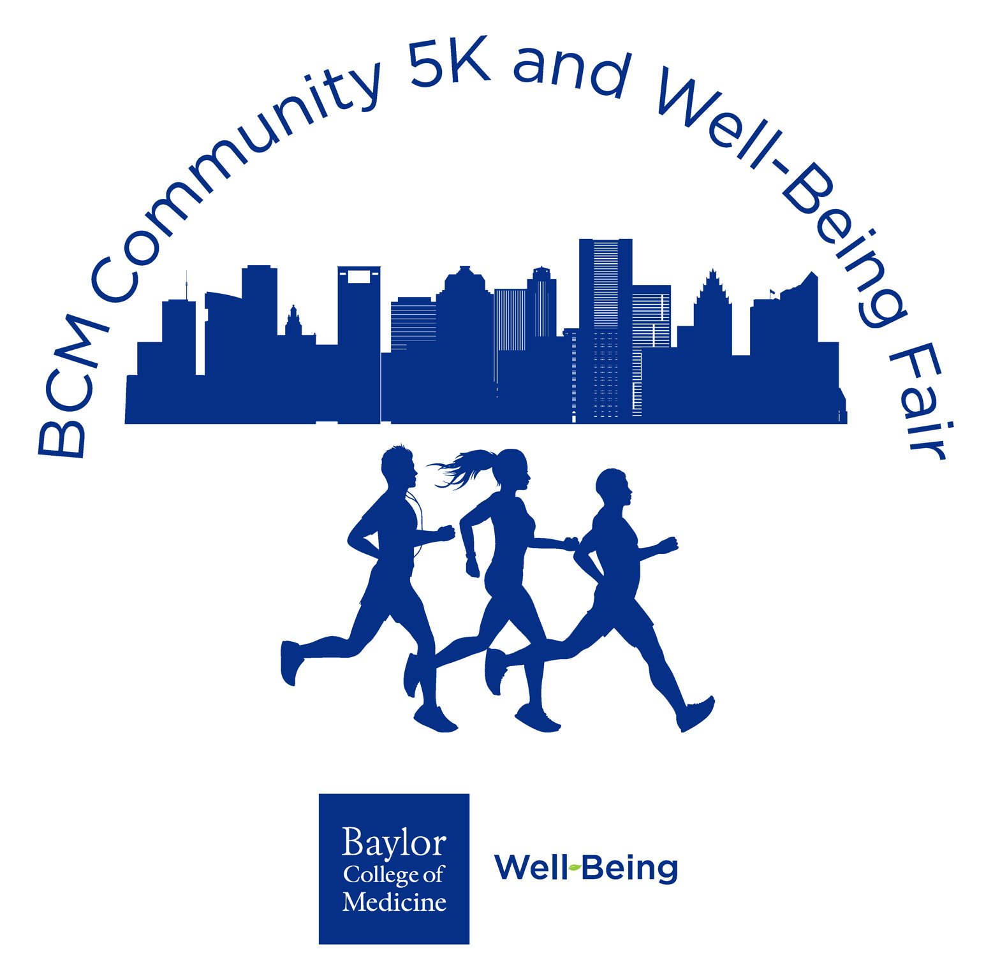

BCM 5k/1k: Soccer with Kids Volunteering
RSVP
Service / volunteering
When
Saturday, October 10 · 8:30 AM – 10:30 AM
Host
BCM 5k Committee / Baylor Soccer · posted in Baylor Soccer ⚽️
Details
The BCM 5k committee needs 2-4 volunteers to play soccer with kids during the 5k/1k. You don't have to stay the whole time.
RSVP
Requested · no deadline given
· link
Like the GroupMe message to sign up. Only 2-4 volunteers are needed.
Announcements
BCM '30 Houston · Aug 28
Hey everyone! If you’re looking for an easy volunteer opportunity, sign up to volunteer at the BCM 5K run on October 10th!
https://m.signupgenius.com/#!/showSignUp/10C054BAAA923A0FCC34-64860155-bcmcommunityBCM '30 Houston · Aug 28
Hey everyone! BCM's annual 5K and Well-Being Fair is coming up on Saturday, October 10 at 8:00am and we are in need of volunteers! You can help kids make bears in the Kids Zone, cheer on runners at the finish line, hand out waters. Come out and have a good time while earning some volunteer hours! https://www.signupgenius.com/go/10C054BAAA923A0FCC34-64860155-bcmcommunity#/Baylor Soccer ⚽️ · Sep 7
Hi everyone! The BCM 5k committee has asked us if a few of us are willing to volunteer at the 5k/1k on Saturday October 10th from 8:30-10:30am! We’re looking for 2-4 volunteers who would be willing to go and spend the morning playing soccer with the kids. You don’t have to stay the whole time but it’ll be a great way to hang out with some kiddos and destress. Like this message if you can come!